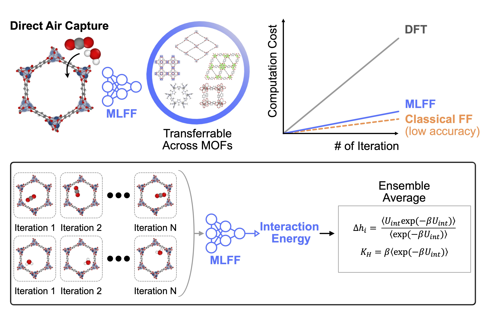
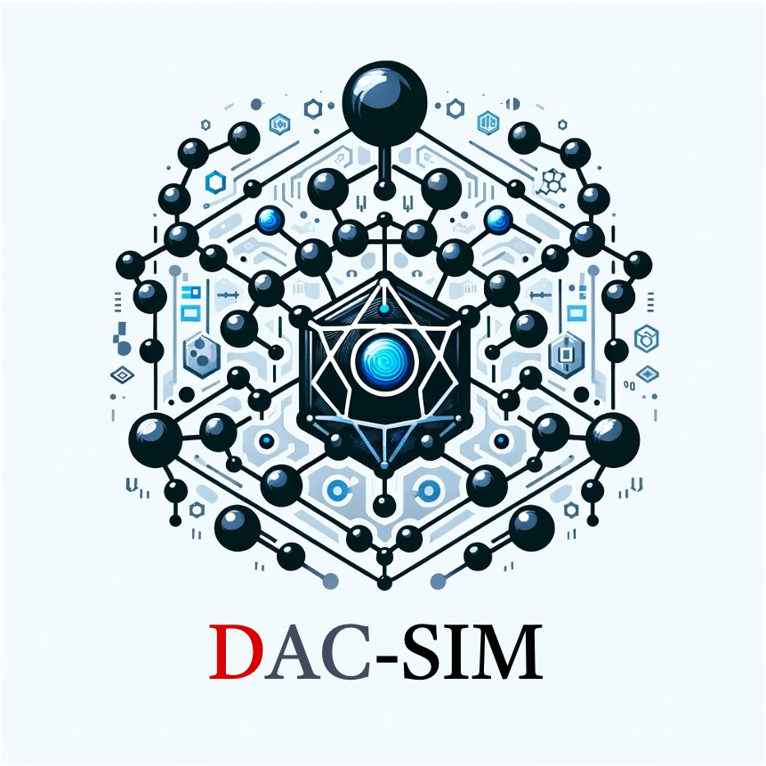
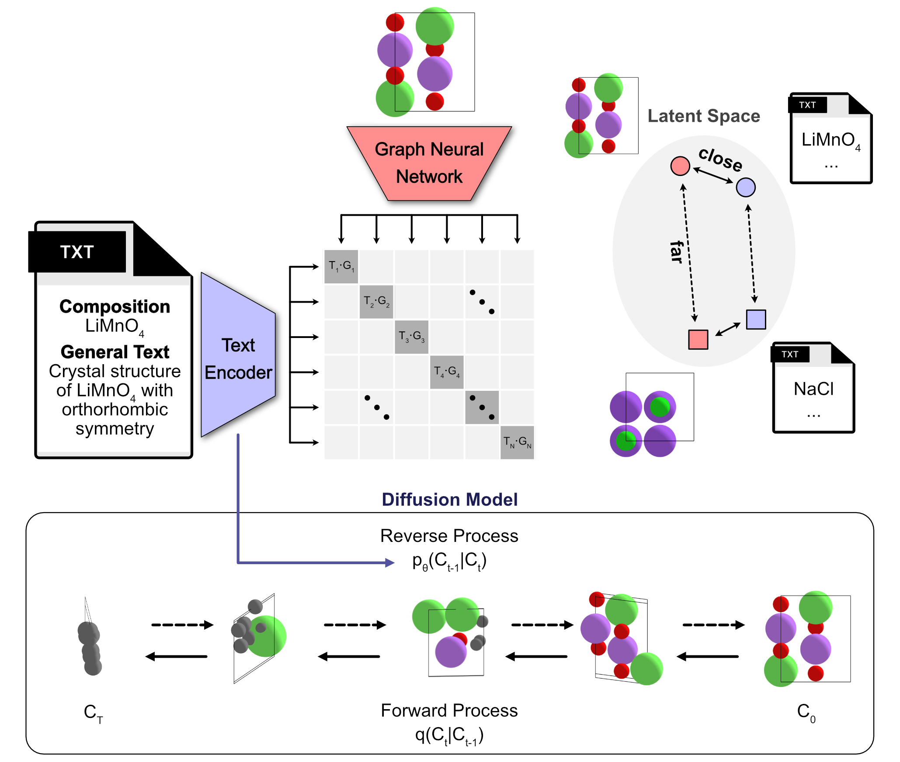
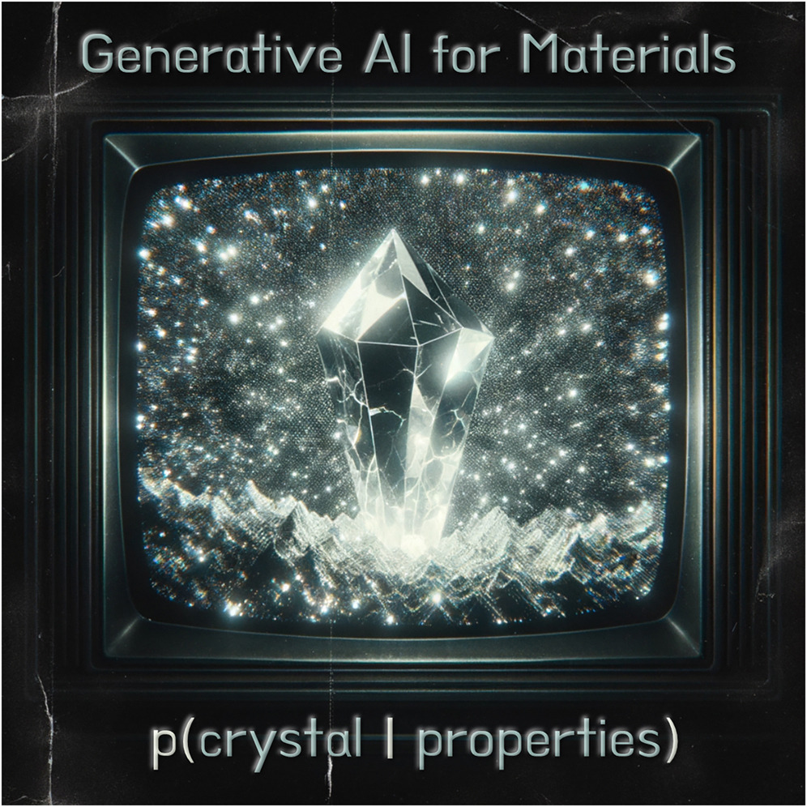

DAC-SIM: a molecular simulation package integrating machine learning force fields in MOFs for CO₂ Direct Air Capture

Materials.AI
I'm Hyunsoo Park.
I'm a postdoc researcher in Prof. Aron Walsh's team at
Imperial College London. I received my PhD degree at KAIST, under guidance of Prof. Jihan Kim.
During my PhD, I have the privilege of working with Prof. Berend Smit at EPFL as a visiting researcher.
I have strong interests in developing computational tools intergrating AI for materials design,
including structure-property relationship, inverse design, and high-throughput screening.
Feel free to explore my Github profile!
🌟 Latest Highlights
- August 2025: 🏆 As Team leader, won 1st Place at the 2025 ChemDX Hackathon with Materials Similarity Explorer (MatSX)
- July 2025: Released "Closing the synthesis gap in computational materials design" in ChemRxiv.
- June 2025: Published "Accelerating CO₂ Direct Air Capture Screening for Metal-Organic Frameworks with a Transferable Machine Learning Force Field" in Matter. 
- May 2024: Published "Exploration of crystal chemical space using text-guided generative artificial intelligence" in Nature Communications.
- Feb 2024: Published an interview on "Reflections in search of faculty (and other) positions in Europe" in Matter.
- Dec 2024: Presented on "Multi-Modal AI for the Design of Functional Porous Materials" in MRS Fall 2024 conference.
- July 2024: Published "Has generative artificial intelligence solved inverse materials design?" in Matter.
- June 2024: Presented on "Inverse Design of Metal-organic Frameworks for Direct Air Capture of CO₂ via Deep Reinforcement Learning" in CIMTEC 2024 conference.
- April 2024: Published "Mapping inorganic crystal chemical space" in Faraday Discussion.
- April 2024: Presented on "Enhancing Structure-Property Relationships in Porous Materials through Transfer Learning and Cross-Material Few-Shot Learning" in MOFSIM 2024 conference.
- March 2024: Published "Inverse Design of Metal-Organic Frameworks for Direct Air Capture of CO₂ via Deep Reinforcement Learning" in Digital Discovery.
- September 2023: Joined Aron Walsh's team at Imperial College London as a research associate.
- August 2023: 🎓 Awarded PhD degree from KAIST.

Research
Machine Learning
Chemeleon: a text-guided generative AI model for crystal structures
Exploration of crystal chemical space using text-guided generative artificial intelligence
Nature Communications (2025)
Perspective on generative AI for inorganic crystal materials
Mapping inorganic crystal chemical space

Mapping Inorganic Crystal Chemical Space
Faraday Discussion (2024)
Developing a reinforcement learning framework for inverse design of Metal-Organic Frameworks

Developing a machine learning model to enable transfer learning in porous materials
Enhancing Structure–Property Relationships in Porous Materials through Transfer Learning and Cross-Material Few-Shot Learning
ACS Applied Materials & Interfaces (2023)
Developing a Transformer neural network for universal transfer learning of MOFs
A Multi-modal Pre-training Transformer for Universal Transfer Learning in Metal-Organic Frameworks
Nature Machine Intelligence (2023)
Developing a joint machine-learning/rule-based algorithm to automatically extract synthesis conditions from MOF papers and predict synthesizability

Mining Insights on Metal–Organic Framework Synthesis from Scientific Literature Texts
Journal of Chemical Information and Modeling (2022)
Developing a autoencoer neural network to improve initial guess of minimum energy path

Deep Learning-based Initial Guess for Minimum Energy Path Calculations
Korean Journal of Chemical Engineering (2020)
Molecular Simulation
Modeling various materials including MXene, MO2C, graphene, MOF, and high-entropy alloy with DFT simulations by collaborating with experimental groups

Understanding Reaction Pathways in High Dielectric Electrolytes Using β-Mo2C as a Catalyst for Li–CO2 Batteries
ACS Applied Materials & Interfaces (2020)

Polyelemental Nanoparticles as Catalysts for a Li–O2 Battery
ACS Nano (2021)

N–p-Conductor Transition of Gas Sensing Behaviors in Mo2CTx MXene
ACS Sensors (2022)
Material Design
DFT simulation to calculate strain energy of interfacial stability for MOF@MOF structures

Computer-aided Discovery of Connected Metal-organic Frameworks
Nature Communications (2019)
High-through screening that uses MOFs as substrates in order to thoeretically allow hetero-epitaxial growth of 3D COFs

Computational Identification of Connected MOF@COF Materials
journal of Physical Chemistry C (2021)
Publications 📚
2025
18.
Lim, Y.*, Park, H.*, Walsh, A. and Kim, J.
Achieving high-throughput screening of CO₂ Direct Air Capture materials with a
transferable machine learning force field.
Matter. 8, 102203
(2025).
17.
Park, H.†, Onwuli, A. and Walsh, A.†
Exploration of crystal chemical space using text-guided generative artificial
intelligence.
Nature Communications. 16, 4379 (2025).
16.
Laudadio, G.*, Lavarda, G.*, Park, H.*, Cranford,
S.
Reflections in search of faculty (and other) positions in Europe.
Matter. 8, 101962
(2025).
2024
15.
Park, H., Li, Z. and Walsh, A.
Has generative artificial intelligence solved inverse materials design?
Matter. 7, 2355-2367
(2024).
14.
Park, H., Ouwuli, A., Butler, K. and Walsh, A.
Mapping inorganic crystal chemical space. Faraday Discussion. 256, 601-613
(2024).
13.
Han, S., Kang, Y., Park, H., Yi, J., Park, G., and Kim, J.
Multimodal Transformer for Property Prediction in Polymers
. ACS Applied Materials & Interfaces. 16, 16853-16860 (2024).
12.
Park, H.*, Majumdar, S.*, Zhang, X., Kim, J., and Smit, B.
Inverse Design of Metal-Organic Frameworks for Direct Air Capture of CO₂ via Deep
Reinforcement
Learning. Digital Discovery. 3, 728-741 (2024).
2023
11. Park,
H.*, Kang, Y.*, and Kim, J.
Enhancing Structure–Property Relationships in Porous Materials through Transfer Learning
and Cross-Material Few-Shot Learning
. ACS Applied Materials & Interfaces. 15, 56375-56385 (2023).
10. Kang, Y.*, Park, H.*,
Smit, B., and
Kim, J. A Multi-modal Pre-training Transformer for Universal Transfer Learning in
Metal-Organic
Frameworks. Nature Machine Intelligence. 5, 309-318 (2023).
2022
9. Choi, J., Chacon B.,
Park, H.,
Hantanasirisakul, K., Kim, T., Shevchuk, K., Lee, J., Hohyung Kang, Cho, S., Kim, J.,
Gogotsi, Y., Kim,
S., and Jung, H. N–p-Conductor Transition of Gas Sensing Behaviors in Mo2CTx MXene.
ACS Sensors. 8,
2225-2234 (2022).
8. Park, H.*, Kang, Y.*,
Choe, W., and
Kim, J. Mining Insights on Metal-Organic Framework Synthesis from Scientific Literature
Texts.
Journal of Chemical Information and Modeling. 62, 1190-1198 (2022).
2021
7. Jung, W., Park, H., Jang,
J., Kim, D.,
Kim, D., Lim, E., Kim, J., Choi, S., Suk, J., and Kang, Y. Polyelemental Nanoparticles as
Catalysts for
a Li–O2 Battery. ACS nano. 15, 4235-4244 (2021).
6. Park, H., Kwon, O., and
Kim, J.
Computational Identification of Connected MOF@ COF Materials. The Journal of Physical
Chemistry C.
125, 5897-5903 (2021).
5. Park, H., Lee,
S., and Kim,
J. Deep learning-based initial guess for minimum energy path calculations. Korean
Journal of
Chemical Engineering. 38, 406-410 (2021).
2020
4. Cho, H., Hyeon, S., Park,
H., Kim,
J., and Cho, E.S. Ultrathin Magnesium Nanosheet for Improved Hydrogen Storage with
Fishbone Shaped
One-Dimensional Carbon Matrix. ACS Applied Energy Materials. 3, 8143-8149
(2020).
3. Wu, M.*, Kim, J.*, Park,
H.*, Kim,
D., Cho, K., Lim, E., Chae, O., Choi, S., Kang, Y., and Kim, J. Understanding Reaction
Pathways in High
Dielectric Electrolytes Using β-Mo2C as a Catalyst for Li–CO₂ Batteries. ACS Applied
Materials &
Interfaces. 12, 32633-32641 (2020).
2019
2. Wu, M., Park,
H., Cho,
K., Kim, J., Kim, S., Choi, S., Kang, Y., Kim, J., and Jung, H. Formation of toroidal
Li2O2 in
non-aqueous Li–O2 batteries with Mo2CTx MXene/CNT composite. RSC Advances. 9,
41120-41125
(2019).
1. Kwon, O., Kim, J., Park, S.,
Lee, J., Ha,
J., Park, H., Moon, H., and Kim, J. Computer-aided discovery of connected
metal-organic
frameworks. Nature communications. 10, 1-8 (2019).
Contact Me
Please email me at hpark@ic.ac.uk